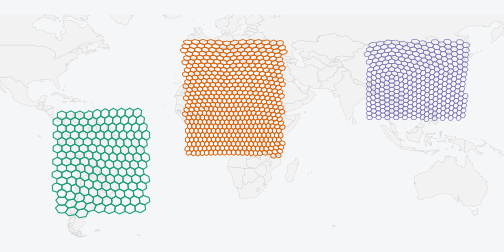
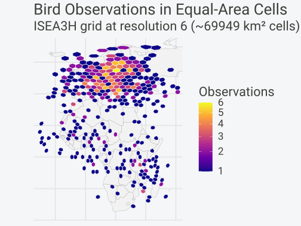
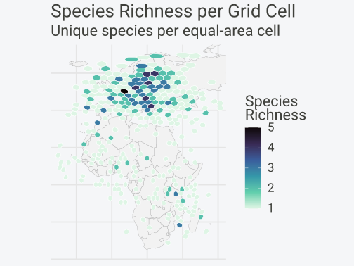

Installation
install.packages("hexify")
# Development version
# pak::pak("gcol33/hexify")
library(hexify)
Spatial Analysis Done Right
You want to do spatial statistics, and it involves binning points into grid cells.
The problem with rectangular grids: A rectangular lat-lon grid introduces severe distortions. At the equator, a 1° cell covers ~12,300 km². Near the poles, the same 1° cell covers a tiny fraction of that area. This breaks any analysis that assumes equal sampling effort or comparable cell sizes.
The solution: Discrete global grids partition Earth’s surface into cells of equal area, regardless of latitude. hexify implements the ISEA (Icosahedral Snyder Equal Area) projection, providing hexagonal cells that are all the same size from the equator to the Arctic.
Basic Usage
# Sample data: European cities
cities <- data.frame(
name = c("Vienna", "Paris", "Madrid", "Berlin", "Rome"),
lon = c(16.37, 2.35, -3.70, 13.40, 12.50),
lat = c(48.21, 48.86, 40.42, 52.52, 41.90)
)
# Create a grid specification
grid <- hex_grid(area_km2 = 10000)
grid
#> HexGridInfo Specification
#> -------------------------
#> Aperture: 3
#> Resolution: 8
#> Area: 7773.97 km^2
#> Diagonal: 94.74 km
#> CRS: EPSG:4326
#> Total Cells: 65612
# Assign cities to hexagonal cells
result <- hexify(cities, lon = "lon", lat = "lat", grid = grid)
result
#> HexData Object
#> --------------
#> Rows: 5
#> Columns: 3
#> Cells: 5 unique
#> Type: data.frame
#>
#> Grid:
#> Aperture 3, Resolution 8 (~7774.0 km^2)
#>
#> Columns: name, lon, lat
#>
#> Data preview (with cell assignments):
#> name lon lat cell_id
#> Vienna 16.37 48.21 14092
#> Paris 2.35 48.86 13272
#> Madrid -3.70 40.42 13260
#> ... with 2 more rowsAccessing HexData
# Get the grid specification
grid_info(result)
#> HexGridInfo Specification
#> -------------------------
#> Aperture: 3
#> Resolution: 8
#> Area: 7773.97 km^2
#> Diagonal: 94.74 km
#> CRS: EPSG:4326
#> Total Cells: 65612
# Get unique cell IDs
cells(result)
#> integer64
#> [1] 14092 13272 13260 13688 14247
# Count unique cells
n_cells(result)
#> [1] 5
# Access all cell IDs (one per row)
result@cell_id
#> integer64
#> [1] 14092 13272 13260 13688 14247
# Access cell centers
head(result@cell_center)
#> lon lat
#> [1,] 15.968349 48.25028
#> [2,] 2.460284 48.49334
#> [3,] -3.482737 40.05509
#> [4,] 13.428088 52.18073
#> [5,] 12.466432 41.61442
# Extract original data as data.frame
head(as.data.frame(result))
#> name lon lat cell_id cell_cen_lon cell_cen_lat cell_area_km2
#> 1 Vienna 16.37 48.21 14092 15.968349 48.25028 7774.205
#> 2 Paris 2.35 48.86 13272 2.460284 48.49334 7774.205
#> 3 Madrid -3.70 40.42 13260 -3.482737 40.05509 7774.205
#> 4 Berlin 13.40 52.52 13688 13.428088 52.18073 7774.205
#> 5 Rome 12.50 41.90 14247 12.466432 41.61442 7774.205
#> cell_diag_km
#> 1 94.74495
#> 2 94.74495
#> 3 94.74495
#> 4 94.74495
#> 5 94.74495With sf Objects
The sf package holds spatial data as simple features: a data frame with a geometry column of points, lines or polygons, and a CRS that says how to read their coordinates. hexify takes an sf object wherever it takes a data frame, and transforms the coordinates itself when the CRS differs from the grid’s.
library(sf)
# Create sf object (any CRS works - hexify transforms automatically)
pts <- st_as_sf(cities, coords = c("lon", "lat"), crs = 4326)
# hexify handles CRS transformation automatically
result_sf <- hexify(pts, area_km2 = 10000)
class(result_sf)
#> [1] "HexData"
#> attr(,"package")
#> [1] "hexify"Real-World Example: Species Occurrence Data
This example demonstrates the typical workflow: loading point data, assigning to grid cells, aggregating, and visualizing.
library(sf)
library(ggplot2)
# Simulate bird observation data (reduced for faster vignette build)
set.seed(123)
n_obs <- 500
# Generate observations with realistic spatial clustering
birds <- data.frame(
lon = c(
rnorm(150, mean = 10, sd = 15), # Western Europe
rnorm(100, mean = 25, sd = 10), # Eastern Europe
rnorm(100, mean = 20, sd = 20), # Mediterranean
rnorm(80, mean = 0, sd = 15), # West Africa
rnorm(70, mean = 35, sd = 10) # East Africa
),
lat = c(
rnorm(150, mean = 50, sd = 8), # Western Europe
rnorm(100, mean = 55, sd = 6), # Eastern Europe
rnorm(100, mean = 42, sd = 5), # Mediterranean
rnorm(80, mean = 10, sd = 10), # West Africa
rnorm(70, mean = -5, sd = 12) # East Africa
),
species = sample(c("Passer domesticus", "Turdus merula", "Parus major",
"Columba palumbus", "Sturnus vulgaris"), n_obs, replace = TRUE)
)
# Clip to valid ranges
birds$lon <- pmax(-30, pmin(60, birds$lon))
birds$lat <- pmax(-35, pmin(70, birds$lat))Assign Points to Grid Cells
# Create grid and assign observations (coarser grid for faster build)
grid <- hex_grid(area_km2 = 50000)
birds_hex <- hexify(birds, lon = "lon", lat = "lat", grid = grid)
# Extract data with cell IDs
birds_gridded <- as.data.frame(birds_hex)
birds_gridded$cell_id <- birds_hex@cell_id
# Count observations per cell
obs_counts <- aggregate(
species ~ cell_id,
data = birds_gridded,
FUN = length
)
names(obs_counts)[2] <- "n_observations"
# Species richness per cell
richness <- aggregate(
species ~ cell_id,
data = birds_gridded,
FUN = function(x) length(unique(x))
)
names(richness)[2] <- "n_species"
obs_counts <- merge(obs_counts, richness, by = "cell_id")
head(obs_counts)
#> cell_id n_observations n_species
#> 1 1 3 2
#> 2 25 2 2
#> 3 54 1 1
#> 4 108 1 1
#> 5 109 2 2
#> 6 163 1 1Generate Cell Polygons and Visualize
# Generate polygons for cells with data
cell_polys <- cell_to_sf(obs_counts$cell_id, grid)
cell_polys <- merge(cell_polys, obs_counts, by = "cell_id")
# Get relevant countries
region <- hexify_world[hexify_world$continent %in% c("Europe", "Africa"), ]
ggplot() +
geom_sf(data = region, fill = "gray95", color = "gray70", linewidth = 0.2) +
geom_sf(data = cell_polys, aes(fill = n_observations), color = "white", linewidth = 0.3) +
scale_fill_viridis_c(option = "plasma", name = "Observations", trans = "sqrt") +
coord_sf(xlim = c(-30, 60), ylim = c(-35, 70)) +
labs(
title = "Bird Observations in Equal-Area Cells",
subtitle = sprintf("ISEA3H grid at resolution %d (~%.0f km² cells)",
grid@resolution, grid@area_km2)
) +
theme_minimal(base_size = FIG_BASE_SIZE) +
theme(
axis.text = element_blank(),
axis.ticks = element_blank(),
panel.grid = element_line(color = "gray90")
)
Species Richness Map
ggplot() +
geom_sf(data = region, fill = "gray95", color = "gray70", linewidth = 0.2) +
geom_sf(data = cell_polys, aes(fill = n_species), color = "white", linewidth = 0.3) +
scale_fill_viridis_c(option = "mako", name = "Species\nRichness", direction = -1) +
coord_sf(xlim = c(-30, 60), ylim = c(-35, 70)) +
labs(
title = "Species Richness per Grid Cell",
subtitle = "Unique species per equal-area cell"
) +
theme_minimal(base_size = FIG_BASE_SIZE) +
theme(
axis.text = element_blank(),
axis.ticks = element_blank(),
panel.grid = element_line(color = "gray90")
)
Core Concepts
hexify uses two S4 classes to make spatial workflows clean and error-free:
HexGridInfo: A grid specification that stores all parameters (aperture, resolution, area). Define once, reuse everywhere.HexData: Your data + the grid that was used. Carries the grid reference so downstream operations “just work.”
HexGridInfo Slots
| Slot | Type | Description |
|---|---|---|
aperture |
character | Grid aperture (“3”, “4”, “7”, or “4/3”) |
resolution |
integer | Resolution level (0-30 for aperture 3, 0-29 for aperture 4, 0-21 for aperture 7) |
area_km2 |
numeric | Cell area in km² |
diagonal_km |
numeric | Cell centre spacing (short diagonal) in km |
crs |
integer or character | EPSG code, or a PROJ or WKT string |
grid_type |
character | Backend: "isea" or "h3"
|
Caveats
Pentagon Cells
At every resolution, the ISEA grid contains 12 pentagonal cells with area 5/6 that of hexagons. These are located at the icosahedron vertices (poles + 10 evenly-spaced low-latitude points).
For most analyses, pentagons are not a concern:
They’re a tiny minority (12 out of millions of cells at high resolutions)
They’re in predictable locations
The area difference (5/6) is small and can be corrected if needed
See Also
vignette("visualization")- Plotting options:plot(),hexify_heatmap()vignette("workflows")- Grid generation, multi-resolution analysis, spatial joins, choosing resolutionvignette("theory")- Mathematical foundations (ISEA projection, apertures, space-filling curves)